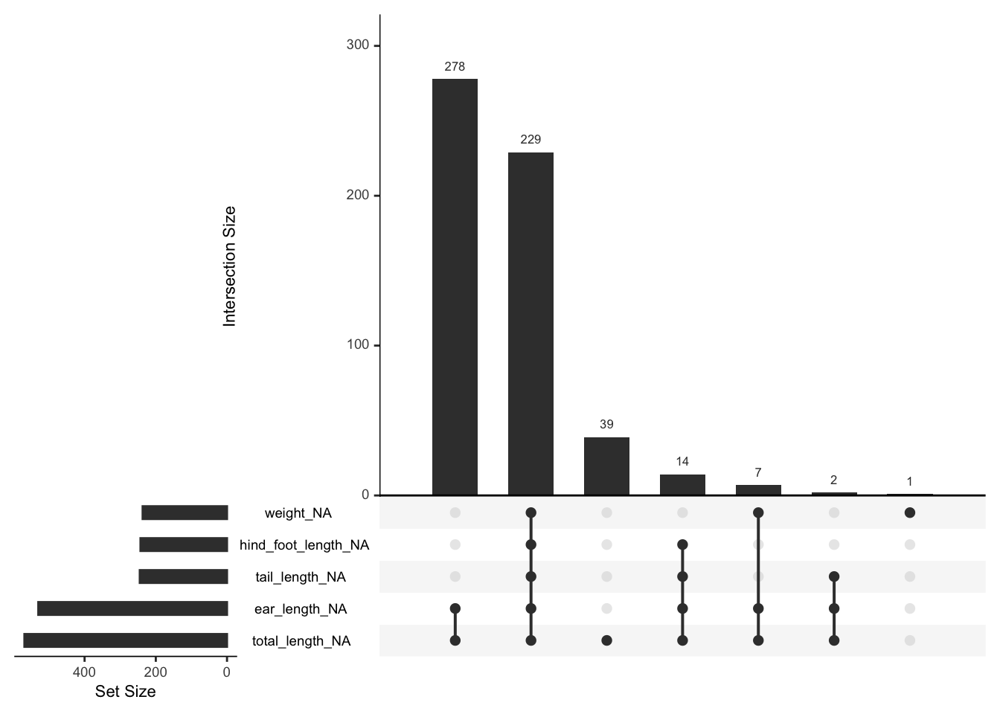
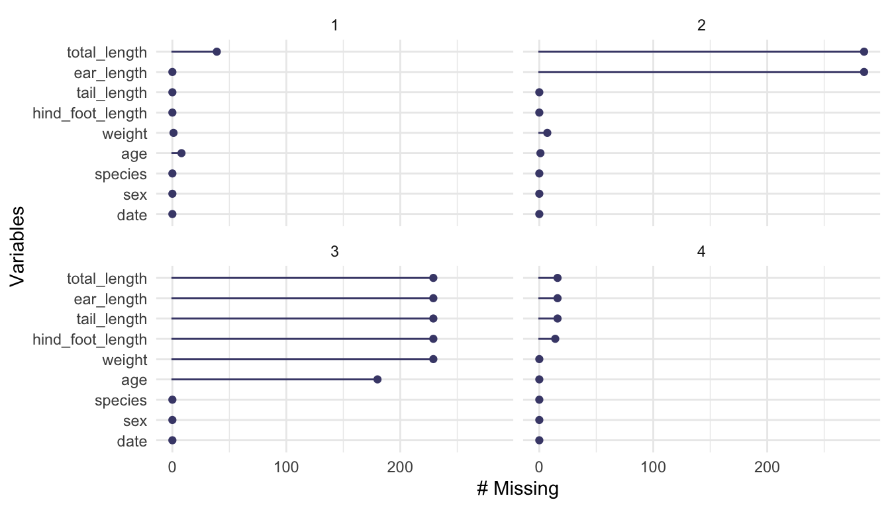
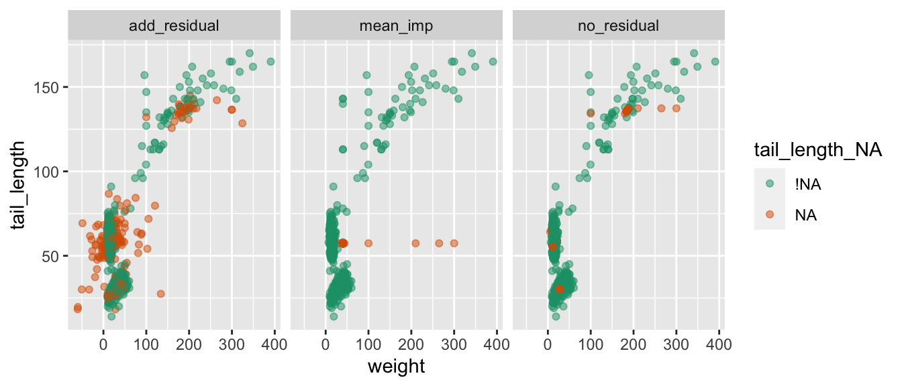

library(tidyverse)
library(visdat)
library(naniar)Some ideas for exploring missing data
Nicholas Tierney
Infectious Disease Ecology and Modelling group
Telethon Kids Institute, Perth, WA, Australia
Introduction
When you do data analysis, you come across missing data. Because I felt so frustrated by how hard it was to handle and wrangle missing data, I wanted to make it easier. In my endeavours I have written two R packages, visdat and naniar, for exploring missing data, and several papers on the topic.
The goal of this article is to share some condensed ideas on exploring missing data, using naniar, and visdat. To that end, we will focus on four questions.
- How do we start looking at missing data?
- How do we explore missingness in variables?
- How do we explore missingness relationships?
- How do we explore imputed values?
But first, let’s introduce ourselves to the data.
The data
The data used for this paper is measurements of rodents in Kansas, from Hope (2023). The use of this data is inspired by Allison Horst’s “Exploring missing values in naniar” shiny application. In this paper we use a different, larger set of the data. For information on the metadata of the paper see here. The data set provides various biometric length and weight measurements, for four species of rodents: the Eastern woodrat, Prairie vole, Western harvest mouse, and Deer mouse. Table Table 1 shows a snapshot of 6 rows of the data, including some of the missingness.
| date | species | total_length | tail_length | hind_foot_length | ear_length | weight | sex | age |
|---|---|---|---|---|---|---|---|---|
| 2016-07-21 | prairie vole | NA | 32 | 20 | NA | 30.0 | F | A |
| 2016-07-21 | deer mouse | NA | 62 | 19 | NA | 17.5 | F | A |
| 2016-07-21 | western harvest mouse | NA | NA | NA | NA | NA | N | NA |
| 2016-07-21 | western harvest mouse | NA | NA | NA | NA | NA | N | NA |
| 2016-07-21 | prairie vole | NA | NA | NA | NA | NA | N | NA |
| 2016-07-21 | prairie vole | NA | 26 | 18 | NA | 18.0 | M | Juv |
How do we start looking at missing data?
To get an overview of the missing data, we can use the visdat package (N. Tierney 2017), which was inspired by the work in csv-fingerprint, and functions like missmap, from Amelia (Honaker, King, and Blackwell 2011). The key function for exploring missingness is vis_miss(), which visualises the missingness of a whole dataframe. Figure 1 gives an example where it displays the data as missing, or not missing, and provides information on the amount of missings in each column.
vis_miss(rodents)
We learn there is nearly 29% missing data overall, the missing data occurs in total_length, tail_length, hind_foot_length, ear_length, weight, and age, and mostly in total length and ear_length.
Exploring subgroups: Using facetting in visdat
To see this plot split up by species, we can split up the vis_miss plots into several facetted plots via the facet argument. For example, in Figure 2 we facet by the species variable. Visually, it appears that the missingness occurs in each species at roughly the same rate.
vis_miss(rodents, facet = species) 
There are other functions in the visdat package that focus on other types of data, for example, vis_value(), vis_binary(), and vis_compare(). To read more about the functions available in visdat see the vignette “Using visdat”.
How do we explore missingness in variables?
The visdat package provides overviews of data, whereas naniar provides a more comprehensive set of tools for missing data.
Numerical summaries of missing values
Two convenient counters of complete values and missings are n_miss() and n_complete(). These work on both data frames and vectors, similar to dplyr::n_distinct()
dplyr::n_distinct(rodents)[1] 617dplyr::n_distinct(rodents$tail_length)[1] 96n_miss(rodents)[1] 2013n_miss(rodents$tail_length)[1] 245n_complete(rodents)[1] 4944n_complete(rodents$tail_length)[1] 528prop_miss_case and pct_miss_case return numeric value describing the proportion or percent of missing values in the dataframe.
prop_miss_case(rodents)[1] 0.7477361pct_miss_case(rodents)[1] 74.77361Similar to pct_miss_case(), prop_miss_case(), pct_miss_var() and prop_miss_var() returns the percent and proportion of variables that contain a missing value.
prop_miss_var(rodents)[1] 0.6666667pct_miss_var(rodents)[1] 66.66667The syntax for the other numerical summaries in naniar are miss_, and then case, or var to refer to cases or variables. There are then summary, table suffixes.
miss_case_summary() returns a numeric value that describes the number of missings in a given case (aka row), the percent of missings in that row.
miss_case_summary(rodents)# A tibble: 773 × 3
case n_miss pct_miss
<int> <int> <dbl>
1 63 6 66.7
2 74 6 66.7
3 77 6 66.7
4 78 6 66.7
5 79 6 66.7
6 91 6 66.7
7 94 6 66.7
8 95 6 66.7
9 98 6 66.7
10 100 6 66.7
# ℹ 763 more rowsmiss_case_table() tabulates the number of missing values in a case / row. Below, this shows the number of missings in a case:
miss_case_table(rodents)# A tibble: 7 × 3
n_miss_in_case n_cases pct_cases
<int> <int> <dbl>
1 0 195 25.2
2 1 48 6.21
3 2 277 35.8
4 3 10 1.29
5 4 14 1.81
6 5 49 6.34
7 6 180 23.3 We can interpret this output as follows:
- There are 195 cases with 0 missings, which comprises about 25% of the data.
- There are 48 cases with 1 missing, these make up 6% of the data.
- There are 277 cases with 2 missing, these make up 35% of the data.
- And so on.
miss_var_summary() then returns the number of missing values in a variable, and the percent missing in that variable.
miss_var_summary(rodents)# A tibble: 9 × 3
variable n_miss pct_miss
<chr> <int> <dbl>
1 total_length 569 73.6
2 ear_length 530 68.6
3 tail_length 245 31.7
4 hind_foot_length 243 31.4
5 weight 237 30.7
6 age 189 24.5
7 date 0 0
8 species 0 0
9 sex 0 0 Finally, miss_var_table(). This describes the number of missings in a variable:
miss_var_table(rodents)# A tibble: 7 × 3
n_miss_in_var n_vars pct_vars
<int> <int> <dbl>
1 0 3 33.3
2 189 1 11.1
3 237 1 11.1
4 243 1 11.1
5 245 1 11.1
6 530 1 11.1
7 569 1 11.1We can interpret this as:
- There are 3 variables with 0 missings, comprising 33% of variables in the dataset.
- There are in the remaining variables similar patterns of missings, but not the exact same number of missing values.
Visualise missingness in variables
To specifically focus on the number or proportion of missings in each variable, we can use gg_miss_var(), as seen in Figure 3.
gg_miss_var(rodents)
This displays the number of missing values in each variable. We learn similar information to Figure 1: total length, and ear length have the most missing values, followed by tail length, hind foot length, weight, and age. Just like with vis_miss(), we can add in facets in these plots, via the facet argument, see Figure 4. We learn again, that the species have similar amounts of missing data in their variables. Sometimes it is useful to confirms the same piece of information!
gg_miss_var(rodents, facet = species, show_pct = TRUE)
show_pct = TRUE as there are different numbers of observations in each species.
It feels like there are several patterns with the missingness - some variables tend to go missing at the same time. To explore these patterns we can use gg_miss_upset(), which produces an “upset” plot (Conway, Lex, and Gehlenborg 2017) of the intersecting sets of missingness. This can be thought of as a generalised way to visualise intersecting venn diagrams.
gg_miss_upset(rodents)

There are more visualisations available in naniar (each starting with gg_miss_) - you can see these in the “Gallery of Missing Data Visualisations” vignette. Most plots created with the gg_miss family all have a basic theme (except for gg_miss_upset()), but you can customise them by adding components like a standard ggplot object:
gg_miss_var(rodents) +
theme_bw() +
labs(y = "Number of missing observations")It is also worth noting that for every visualisation of missing data in naniar, there is an accompanying function to extract the data used in the plot. This is important as the plot should not return a dataframe - but we want to make the data available for use by the user so it isn’t locked into a plot.
You can find these summary plots below, with miss_var_summary() providing the dataframe that gg_miss_var() is based on.
miss_var_summary(rodents)# A tibble: 9 × 3
variable n_miss pct_miss
<chr> <int> <dbl>
1 total_length 569 73.6
2 ear_length 530 68.6
3 tail_length 245 31.7
4 hind_foot_length 243 31.4
5 weight 237 30.7
6 age 189 24.5
7 date 0 0
8 species 0 0
9 sex 0 0 Which also works with group_by():
rodents %>%
group_by(species) %>%
miss_var_summary()Similarly, there is a data_vis_miss() function in the visdat package, which returns the data in the format that this visualisation requires.
data_vis_miss(rodents)The aim of these is to provide the data required to make these visualisations, so if people want to create their own more customised versions of vis_miss() or gg_miss_var() then they can do that.
How to explore missingness relationships?
We can identify key missing variables using vis_miss(), gg_miss_var(), and gg_miss_upset(), but for further exploration, we need to explore the relationship amongst the variables in this data:
- date
- species
- total_length
- tail_length
- hind_foot_length
- ear_length
- weight
- sex
- age
Exploring using bivariate plots
Let’s say that we want to explore the relationship between tail length and ear length. Figure 6 shows a scatter plot of tail length and ear length.
library(ggplot2)
ggplot(rodents,
aes(x = ear_length,
y = tail_length)) +
geom_point()
The problem with this is ggplot does not handle missings removes the missing values. This makes them hard to explore. We can impute missings with values 10% lower than the minimum value in that variable, which puts these values in a margin area on the graphic. This method comes from ggobi (Cook and Swayne 2007), and manet (Unwin et al. 1996).
This imputation is wrapped up in the geom_miss_point() ggplot2 geom. Figure 7 illustrates this by exploring the relationship between tail length and ear length from the rodents dataset.
ggplot(rodents,
aes(x = ear_length,
y = tail_length)) +
geom_miss_point() +
scale_colour_brewer(palette = "Dark2")Being a proper ggplot geom, it supports all of the standard features of ggplot2, such as facets and themes. See Figure 8 for an example with faceting by month and a custom theme.
ggplot(rodents,
aes(x = ear_length,
y = tail_length)) +
geom_miss_point() +
facet_wrap(~species) +
theme_dark()Exploring using modelling
As evidenced by Figure 5, there is a structure in the missingness in the rodents data. We can perform some basic clustering on the missingness and then and learn which variables and their values predict these missingness groups using decision trees (N. J. Tierney et al. 2015; Barnett et al. 2017). We start by adding missingness clusters, choosing four based on Figure 5. We encourage exploring different numbers of clusters. We can then confirm this pattern using visualisations.
rodents_miss_clust <- rodents %>% add_miss_cluster(n_clusters = 4)
gg_miss_var(rodents_miss_clust, facet = miss_cluster)
We use the R package rpart (Therneau and Atkinson 2023) to fit a classification and regression tree (CART) to the data using all variables.
library(rpart)
rodent_miss_cart <- rpart(
factor(miss_cluster) ~ .,
data = rodents_miss_clust
)Variable importance scores (Table 2) reveal the most important variables for predicting missingness cluster are date and sex.
| variable | importance |
|---|---|
| date | 221.387697 |
| sex | 167.959712 |
| hind_foot_length | 20.283431 |
| age | 15.078286 |
| species | 10.671966 |
| tail_length | 7.373253 |
| weight | 5.177268 |
To better understand these relationships, we would recommend exploring using partial dependence plots using packages such as vip (Greenwell and Boehmke 2020) and other decision tree plots using rpart.plot (Milborrow 2022).
How do we explore imputed values?
The simputation package provides a nice interface to imputation. We will impute values for tail_length using the impute_lm() function, then visualise the data, as seen in Figure 9.
library(simputation)
library(dplyr)
rodents %>%
impute_lm(tail_length ~ species + age) %>%
ggplot(aes(x = weight,
y = tail_length)) +
geom_point()Warning: Removed 237 rows containing missing values (`geom_point()`).We don’t get any warnings regarding missing observations - because they are all imputed! However this comes at a cost: we don’t know where the imputations are - they are now sort of invisible.
We can track a copy of the missing data locations by using the function nabular(), which binds another dataset to the current one which notes the locations of the missing data. “Nabular” data is a really important idea in naniar, but to keep it brief, for each column with missing values, a new column is created to help identify misingness. For example, a new column called ear_length_NA is created:
nabular(rodents) |>
select(starts_with("ear_length")) |>
head()# A tibble: 6 × 2
ear_length ear_length_NA
<dbl> <fct>
1 39 !NA
2 18 !NA
3 17 !NA
4 21 !NA
5 19 !NA
6 19 !NA The key takeaway here is there is now a copy of the data bound to it, with each column ending in _NA, and the values either being “NA” for missing, or “!NA” for not missing. For more details on the ideas underlying this, and the benefits, we recommend reading our paper, “Expanding Tidy Data Principles to Facilitate Missing Data Exploration, Visualization and Assessment of Imputations” (N. Tierney and Cook 2023).
Using the shadow matrix to keep track of where the missings are, you can actually keep track of the imputations, colouring by what was previously missing in tail_length. For example, let’s create the nabular data, then impute the data using a random forst, and plot it in Figure 10.
rodents_nabular <- rodents %>%
nabular() %>%
as.data.frame()
rodents_lm_tail_imputed <- rodents_nabular %>%
impute_lm(tail_length ~ species + date) %>%
impute_lm(weight ~ tail_length + species + date)
ggplot(rodents_lm_tail_imputed,
aes(x = weight,
y = tail_length,
colour = tail_length_NA)) +
geom_point(alpha = 0.5) +
scale_colour_brewer(palette = "Dark2")
The simputation package has a nice option to add residual noise to the imputations - in this case we can add some normal noise to the observations, where the residuals are draws with replacement from the model residuals. This gives us much greater variation in the imputations. For comparison to other naive approaches, we will also add mean imputation for comparison
Importantly, we can actually compare the two methods as below. This first imputes the data using the residual method, then rowbinds the two datasets together, creating a column called “imputation_type”, which records which type of imputation was used, either “add_residual” or “no_residual”:
rodents_lm_tail_imputed_res <- rodents_nabular %>%
impute_lm(tail_length ~ species + date, add_residual = "observed") %>%
impute_lm(weight ~ tail_length + species + date, add_residual = "observed")
rodents_mean_imputed <- rodents %>%
nabular() %>%
as.data.frame() %>%
impute_mean_all()
rodents_imputed_comparison <- bind_rows(
add_residual = rodents_lm_tail_imputed_res,
no_residual = rodents_lm_tail_imputed,
mean_imp = rodents_mean_imputed,
.id = "imputation_type"
) %>% as_tibble()
rodents_imputed_comparison# A tibble: 2,319 × 19
imputation_type date species total_length tail_length hind_foot_length
<chr> <date> <chr> <dbl> <dbl> <dbl>
1 add_residual 2016-07-12 eastern… 360 165 28
2 add_residual 2016-07-12 prairie… 123 32 12
3 add_residual 2016-07-12 western… 138 69 15
4 add_residual 2016-07-12 prairie… 149 35 13
5 add_residual 2016-07-12 deer mo… 136 57 16
6 add_residual 2016-07-12 deer mo… 169 55 15
7 add_residual 2016-07-12 deer mo… 139 55 15
8 add_residual 2016-07-12 deer mo… 136 57 14
9 add_residual 2016-07-13 eastern… 331 136 27
10 add_residual 2016-07-13 eastern… 339 159 28
# ℹ 2,309 more rows
# ℹ 13 more variables: ear_length <dbl>, weight <dbl>, sex <chr>, age <chr>,
# date_NA <fct>, species_NA <fct>, total_length_NA <fct>,
# tail_length_NA <fct>, hind_foot_length_NA <fct>, ear_length_NA <fct>,
# weight_NA <fct>, sex_NA <fct>, age_NA <fct>We can see see the two different imputation methods side by side in Figure 11.
ggplot(rodents_imputed_comparison,
aes(x = weight,
y = tail_length,
colour = tail_length_NA)) +
geom_point(alpha = 0.5) +
scale_colour_brewer(palette = "Dark2") +
facet_wrap(~imputation_type)

Conclusion
In this software corner we have demonstrated the use of the visdat and naniar R packages for exploring and understanding missing data.
References
Barnett, Adrian G., Paul McElwee, Andrea Nathan, Nicola W. Burton, and Gavin Turrell. 2017. “Identifying Patterns of Item Missing Survey Data Using Latent Groups: An Observational Study.” BMJ Open 7 (10): e017284. https://doi.org/10.1136/bmjopen-2017-017284.
Conway, Jake R., Alexander Lex, and Nils Gehlenborg. 2017. “UpSetR: An R Package for the Visualization of Intersecting Sets and Their Properties.” Bioinformatics (Oxford, England) 33 (18): 2938–40. https://doi.org/10.1093/bioinformatics/btx364.
Cook, Dianne, and Deborah F. Swayne. 2007. Interactive and Dynamic Graphics for Data Analysis: With and . Use R! New York: Springer. https://doi.org/10.1007/978-0-387-71762-3.
Greenwell, Brandon M., and Bradley C. Boehmke. 2020. “Variable Importance Plots—an Introduction to the Vip Package.” The R Journal 12 (1): 343–66. https://doi.org/10.32614/RJ-2020-013.
Honaker, James, Gary King, and Matthew Blackwell. 2011. “Amelia II: A Program for Missing Data.” Journal of Statistical Software 45 (1): 1–47. https://doi.org/10.18637/jss.v045.i07.
Hope, Andrew. 2023. “CSM08 Small Mammal Host-Parasite Sampling Data for 16 Linear Trapping Transects Located in 8 LTER Burn Treatment Watersheds at Konza Prairie.” Environmental Data Initiative. https://doi.org/10.6073/PASTA/F7BFB7226B093C817DC391C34A88B514.
Milborrow, Stephen. 2022. Rpart.plot: Plot ’Rpart’ Models: An Enhanced Version of ’Plot.rpart’. https://CRAN.R-project.org/package=rpart.plot.
Therneau, Terry, and Beth Atkinson. 2023. Rpart: Recursive Partitioning and Regression Trees. https://CRAN.R-project.org/package=rpart.
Tierney, Nicholas. 2017. “visdat: Visualising Whole Data Frames.” The Journal of Open Source Software 2 (16): 355. https://doi.org/10.21105/joss.00355.
Tierney, Nicholas J., Fiona A. Harden, Maurice J. Harden, and Kerrie L. Mengersen. 2015. “Using Decision Trees to Understand Structure in Missing Data.” BMJ Open 5 (6): e007450. https://doi.org/10.1136/bmjopen-2014-007450.
Tierney, Nicholas, and Dianne Cook. 2023. “Expanding Tidy Data Principles to Facilitate Missing Data Exploration, Visualization and Assessment of Imputations.” Journal of Statistical Software 105 (7): 1–31. https://doi.org/10.18637/jss.v105.i07.
Unwin, Antony, George Hawkins, Heike Hofmann, and Bernd Siegl. 1996. “Interactive Graphics for Data Sets with Missing Values—.” Journal of Computational and Graphical Statistics 5 (2): 113–22. https://doi.org/10.1080/10618600.1996.10474700.